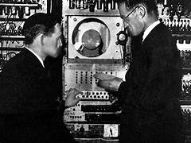

ALAN TURING

Alan Turing, a visionary mathematician and pioneering computer scientist, is widely regarded as one of the most influential figures of the 20th century. Born in 1912 in London, Turing's exceptional intellect and groundbreaking ideas laid the foundation for modern computing and artificial intelligence. His most notable achievements include the conception of the Turing Machine, a theoretical device that revolutionized our understanding of algorithms and computation, and his crucial role in deciphering the Enigma code during World War II, a feat that significantly contributed to the Allied victory.